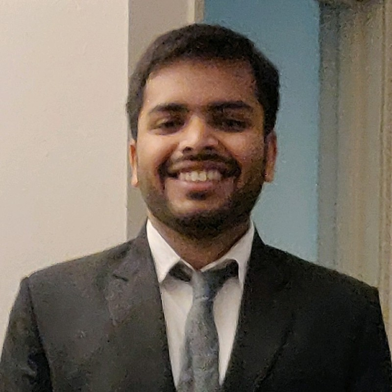

I am currently a PhD candidate in the Department of Aerospace engineering at the University of Michigan. I completed my masters in Aerospace engineering at the University of Michigan in 2020. I received a bachelors degree in Aerospace engineering from the Indian Insitute of Technology(IIT), Kanpur, India in 2018. My research interests are formal methods and numerical analysis. I am interested in analyzing the accuracy and convergence properties of numerical schemes. I work with interactive theorem provers like Coq Proof assistant, HOL4, to formalize numerical approximation errors and bound them formally. I am also interested in automated reasoning using SMT/SAT solvers and use light weight code analysis tools like Frama-C/VST to certify results obtained from numerical programs.
Besides research I enjoy outdoor activities like Kayaking, hiking etc. I like to workout and spend time with nature. I also like to go on road trips and enjoy rock music. I like to collect vinyl records. I am a huge fan of the AC/DC, Beatles and Deep Purple.
Link to my CV.
I was a Graduate Teaching Assistant(GSI) for the course AERO 495 (Fundamentals of Aerospace Computing) in the Fall 2019 and Fall 2020 semesters. I was responsible for conducting labs, grading homeworks and exams, holding office hours.
Student feedback rating: 4.6/5.0 (Fall 2020)